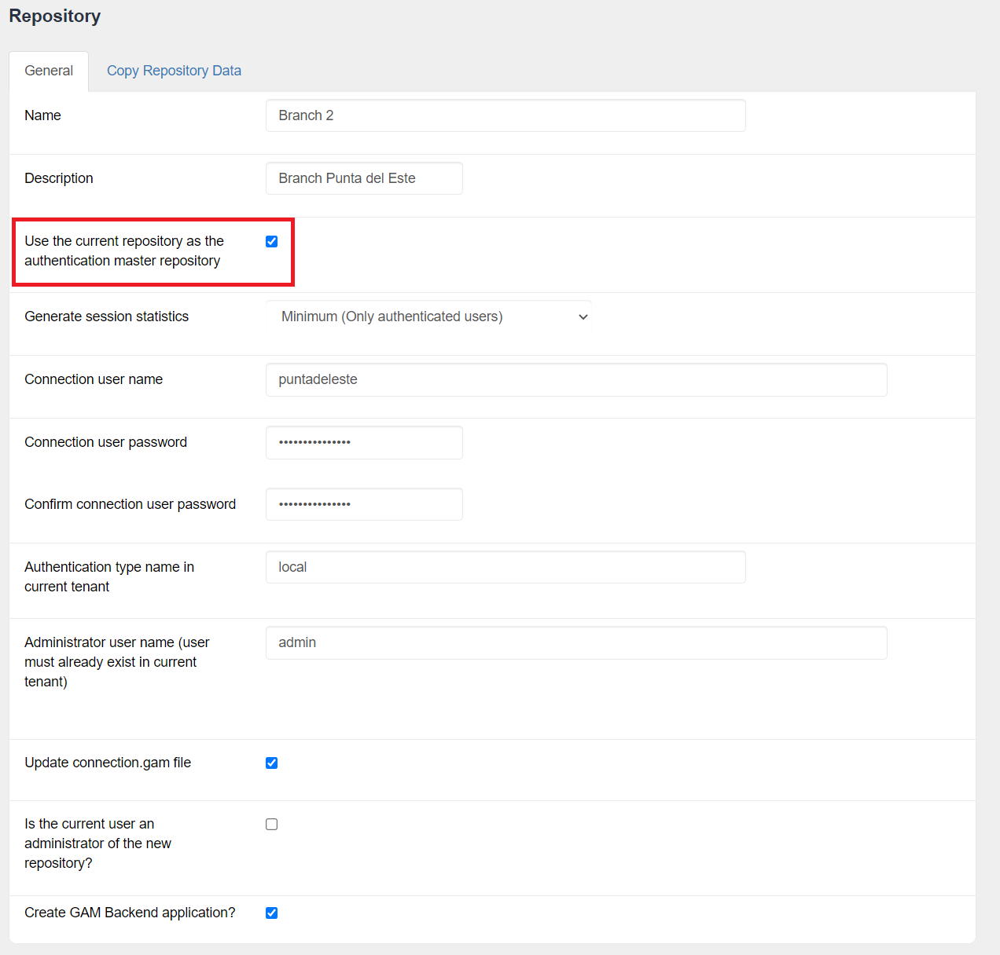

This property indicates that the current repository will be used as the centralized authentication location; that is, any repository created with this property enabled must authenticate against the master repository.
This property only works for web apps.
Sample code to create a repository with this property:
&GUID = GUID.NewGuid().ToString()
&RepositoryCreate.GUID = &GUID
&RepositoryCreate.Name = &RepName
&RepositoryCreate.NameSpace = &NameSpace
&RepositoryCreate.Description = &Description
&RepositoryCreate.AdministratorUserName = &AdministratorUserName
&RepositoryCreate.AdministratorUserPassword = &AdministratorUserPassword
&RepositoryCreate.AllowOauthAccess = &AllowOauthAccess
&RepositoryCreate.ConnectionUserName = &ConnectionUserName
&RepositoryCreate.ConnectionUserPassword = &ConnectionUserPassword
&RepositoryCreate.GenerateSessionStatistics = &GenerateSessionStatistics
&RepositoryCreate.GiveAnonymousSession = True
&RepositoryCreate.AllowOauthAccess = True
If &UseCurrentRepositorAsMasterAuthentication
&GAMRepository = GAMRepository.Get()
RepositoryCreate.AuthenticationMasterRepositoryId = &GAMRepository.Id
&RepositoryCreate.AuthenticationMasterAuthTypeName = &AuthenticationMasterAuthTypeName
Endif
&isOK = GeneXusSecurity.GAM.CreateRepository(&RepositoryCreate, &UpdateConnectionFile, &Errors)
Once the new repository is created, the authenticated user must select the repository to work with, using the following method:
&OK= GeneXusSecurity.GAM.SetConnection(&RepName, &Errors)
When using this method, the user’s context changes, taking the Roles and Permissions of the user in the selected repository.
If users try to access a repository to which they don't have access, they will lose authentication (they will be logged out).
From the GAM backend it can be created as follows:

There are 3 ways to add a user to a repository:
To remove access to a user, it is similar to the following methods:
GAM.RepositoryUserDisable(&RepositoryId, &GAMUser, &GAMErrorCollection) : Boolean
&GAMUser.RepositoryDisable(&GAMErrorCollection): Boolean
One of the most common use cases is the need to have all users centralized, where their roles vary depending on the repository where they are located.
The use of this property is not supported for a system operating as an Identity Provider (IDP), but can be used by IDP Clients.
A common example is a company with several branches, where each user can have different roles in each branch.
An analogy can be made indicating that the master repository is the company's head office, or this master repository can be used only as an authentication hub and the only thing that can be done is to select the branch to work in. Each branch would be one of the different repositories that are children of the Master.
Each branch will have different users enabled, and will not give access to other users; those who have access will be able to specify which Roles they have per branch.
| Backlinks |
| HowTo: Creating New Repositories |